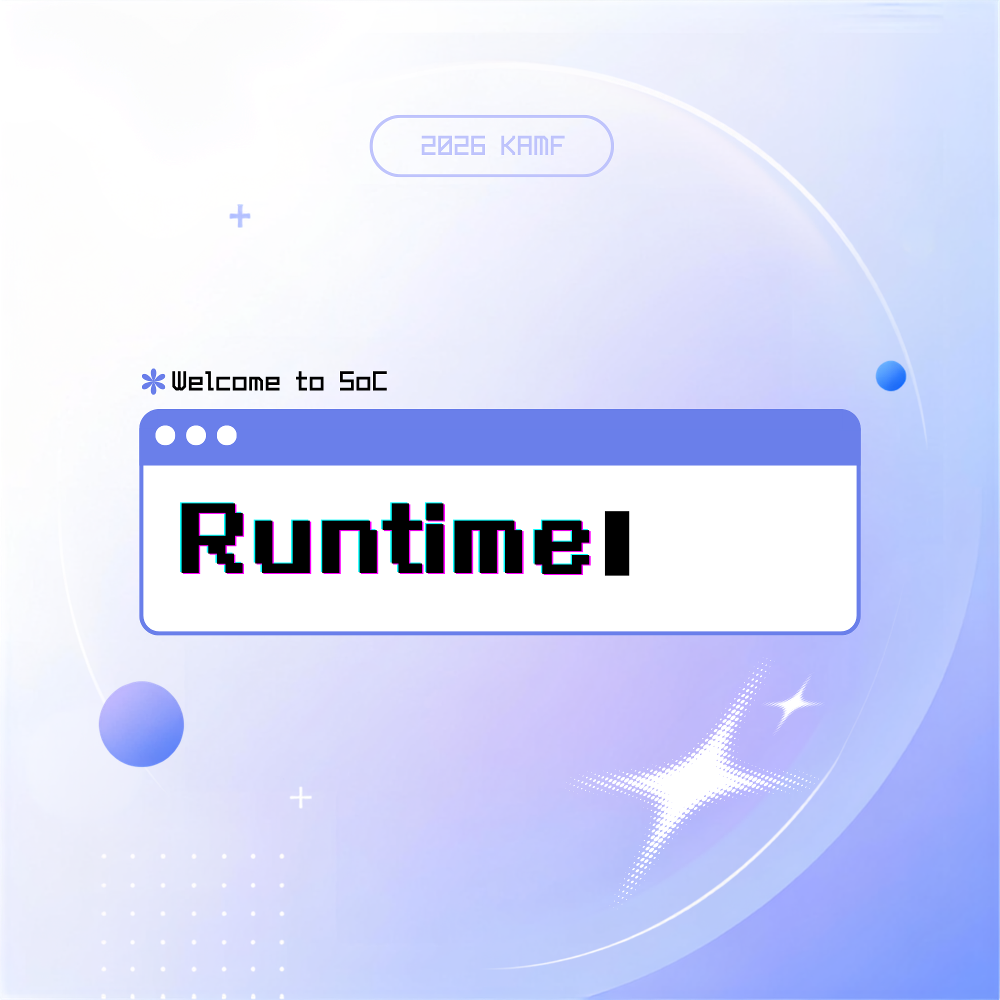

가운데 서주세요
전신이 카메라에 보이게 · 2~3m 거리
준비 중…
LIVES
♥♥♥
COIN
0
SCORE
0
BEST
0
🕹 몸 좌우 = 이동 · 점프 = 뛰기
↻ 재시도
⟲ 재보정
≡ 메뉴
game over
GAME OVER
SCORE
0
↻ 다시하기
≡ 메뉴
✦
✧
✦
+
+
2026 KAMF · SoC

몸으로 즐기는 지하철 러너 · MOTION RUNNER
▶ 게임 시작
⚙ 설정
? 도움말
settings
게임 속도
이동 속도
좌우 민감도
점프 강도
미리보기 위치
오른쪽아래
왼쪽아래
오른쪽위
왼쪽위
▶ 게임 시작
기본값 초기화
← 뒤로
help
1
카메라 정면
2~3m
에 서세요 (전신이 보이게)
2
"가운데 서세요"
3초
유지 → 보정 완료
3
좌/우로 한 발 =
칸 이동
, 살짝 점프 =
점프
▶ 게임 시작
← 뒤로